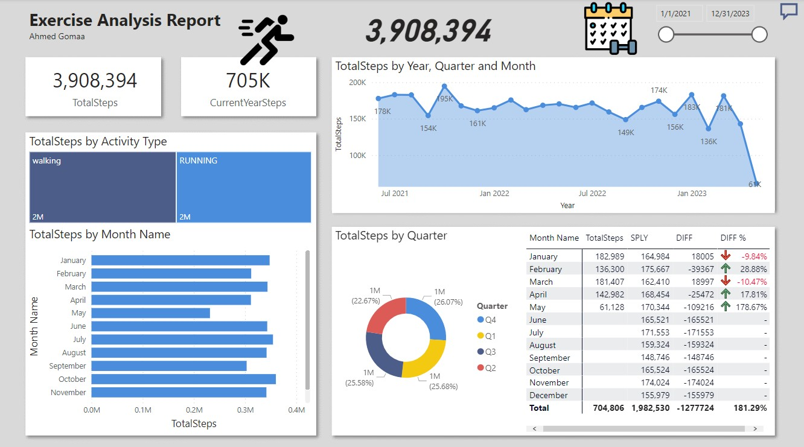

AtliQ, which was established in 2017, has successfully developed various software solutions. Right from web application development to automation, we have been able to provide businesses with custom solutions that help scale and streamline their tasks and minimize overhead costs, scale their functions, and increase efficiency. We have created resourceful software that gives a great return on investment.


Data Exploration OF covid 19 DataSet in SQL Server.
This holds all of my Tablue Dashboards.

Donec eget ex magna. Interdum et malesuada fames ac ante ipsum primis in faucibus. Pellentesque venenatis dolor imperdiet dolor mattis sagittis magna etiam.

Web scraping is the process of using bots to extract content and data from a website. ... Web scraping is used in a variety of digital businesses that rely on data harvesting. Legitimate use cases include: Search engine bots crawling a site, analyzing its content and then ranking it.

Correlation refers to the statistical relationship between two entities. In other words, it's how two variables move in relation to one another. Correlation can be used for various data sets, as well. ... Zero or no correlation: A correlation of zero means there is no relationship between the two variables
By “retail” we mean the market that includes all those activities that involve the sale of goods or services by a company directly to the consumer that are usually purchased for personal or family use